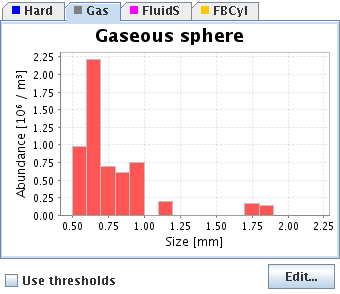
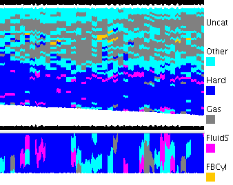

This view shows the results of plankton inversion done during preprocessing. The histogram is the combination of all histograms for all pixels in the currently selected region(s).

If "Use thresholds" is checked, only pixels with Sv values within the thresholds for the current frequency are used.
The edit button brings up an editor for adjusting the initial size distribution.
Plankton inversion results can also be used in the interpretation if mappings between plankton categories and acoustic categories have been defined in the configuration. The plankton categories can also be displayed in the echogram by selecting the plankton color map from the context menu of the colorbar.

More information about the plankton inversion and algorithm details can be found in the preprocessing help system.